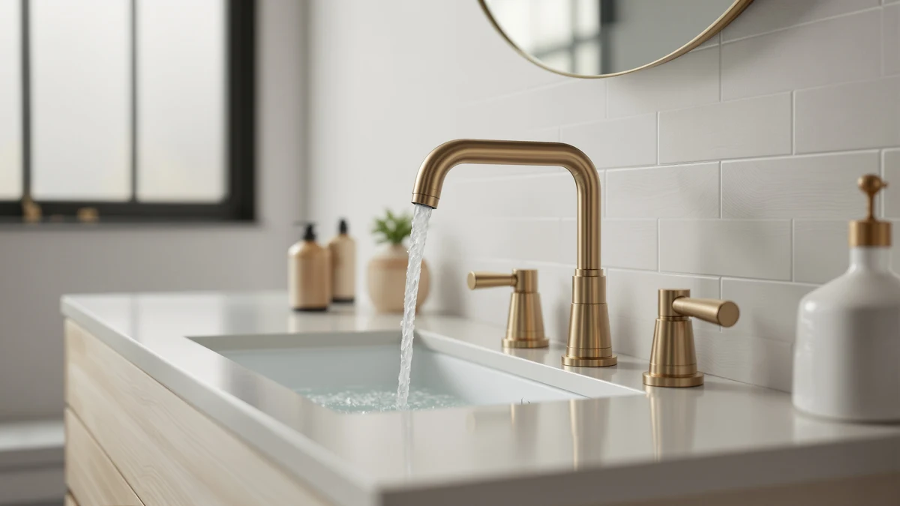

Best How to Install Bathroom Faucet (2026) | Best Bathroom Faucets
Prices and picks verified as of August 2026. Independent, reader-supported reviews.


Things to Know Before You Buy
- Match the hole spacing first. Centerset faucets need three holes 4 inches apart, widespread models span 8 inches, and single-hole faucets need one opening. Measure your sink before you buy anything.
- A basin wrench saves the job. The mounting nuts sit in a cramped gap behind the basin, and a $15 basin wrench reaches where an adjustable wrench cannot.
- Replace the supply lines while you are under there. Braided stainless lines cost about $10 a pair and fail far less often than old chrome or plastic tubes.
- Budget 75 minutes, not 20. The faucet itself mounts quickly; corroded old nuts and cramped cabinets eat the rest of the time.
- Check for a deck plate. Single-hole faucets like our NOHALIPY pick often ship with an escutcheon plate that covers unused holes, which lets you upgrade the faucet without changing your sink.
If you have searched how to install bathroom faucet and closed the tab feeling defeated, the job is smaller than the plumbing forums make it sound. A standard centerset or single-hole swap takes about 75 minutes, costs around $20 in supplies, and needs two wrenches, one of which you probably own. We wrote this guide after swapping faucets in three of our own bathrooms, and the steps below follow the order that kept us from crawling back under the sink twice.
The five steps cover the whole job: shutting off the water, pulling the old faucet, sealing and setting the new one, connecting the supply lines, and flushing before you judge the result. Work them in order. Skipping ahead, usually straight to the shiny new faucet in step 3, causes the leaks and stripped threads that turn an afternoon project into a plumber invoice.
What You'll Need
- Supplies: thread seal tape, clear silicone sealant, two braided stainless steel supply lines, an old towel and a small bucket
- Tools: basin wrench, adjustable wrench, flashlight or headlamp, plastic putty knife
Step 1: Shut off the water supply
Open the vanity cabinet and find the two shutoff valves on the wall below the sink, one for hot and one for cold. Turn each clockwise until it stops, then open the faucet and let it run until the stream dies. Draining the pressure now saves you a soaked cabinet floor in step 2.
Old valves seize. If a valve refuses to turn or keeps dripping after it closes, shut off the main supply to the house and plan to replace that valve while you are in there. Testing the shutoffs is the least glamorous part of installing a bathroom faucet, and it is the step that decides whether the rest of the job stays dry.
Empty the cabinet, lay a towel across its floor, and set a small bucket under the supply connections. A flashlight or headlamp earns its place here; the working area behind the basin sits in permanent shadow.
Step 2: Remove the old faucet
Disconnect both supply lines where they meet the faucet tailpieces, catching the runoff in your bucket. If the sink has a pop-up drain linked to the faucet, unscrew the pivot nut on the drain body and slide the horizontal rod out before it snags anything.
Reach behind the basin with the basin wrench and back off the mounting nuts that clamp the faucet to the sink. This is the tightest, most awkward stretch of any bathroom faucet installation. Corroded nuts respond to penetrating oil and ten minutes of patience; forcing them cracks porcelain.
Lift the old faucet off the deck, then scrape away the ring of hardened putty or silicone with a plastic putty knife. Wipe the area down with white vinegar to dissolve the mineral crust. The new faucet seals against this surface, so give the deck two clean minutes.
Step 3: Set and seal the new faucet
Most current faucets, including the Pfister Willa we recommend below, ship with a rubber gasket that seals the base against the sink. Use it if you have it. If not, run a thin bead of clear silicone around the base perimeter and skip plumber's putty, which degrades some plastic bodies and stains cultured marble.
Drop the tailpieces through the mounting holes, center the body, and check the alignment from the front before you touch a wrench. Then thread the mounting nuts on by hand and tighten with the basin wrench a quarter turn past snug. Overtightening warps gaskets and cracks sinks, and it is the mistake we see most from people learning how to install bathroom faucet hardware for the first time.
If your faucet includes a new pop-up drain, assemble it now while the cabinet sits empty: flange through the sink hole, locknut from below, lift rod connected to the pivot arm. Retrofitting the drain after the supply lines go in doubles the contortion.
Step 4: Connect the supply lines
Connect the new braided stainless lines to the faucet tailpieces first, while the fittings can still spin freely, then to the shutoff valves. Hot goes to the left handle, cold to the right. Hand-tighten each compression nut, then add a quarter to half turn with the adjustable wrench.
Wrap two or three clockwise turns of thread seal tape around the valve threads before connecting, unless your lines carry rubber-gasketed fittings, which seal on their own. Match the line length to the gap; a line stretched taut across a 9-inch span weeps at the fitting within months. This is the step of a bathroom faucet install where cheap parts buy you a flooded cabinet, so choose braided lines from a brand you recognize.
Step 5: Flush the lines and check for leaks
Unscrew the aerator from the spout tip before you restore the water. The first flush pushes tape flakes and line grit through the faucet, and the aerator screen catches all of it, which chokes the flow and starts the "my new faucet has no pressure" complaint.
Open both shutoff valves a quarter turn and watch the connections, then open them fully. Run hot and cold for a minute, shut the faucet off, and wipe each joint with a dry paper towel; the towel reveals a weep your eye misses. Snug any damp fitting an eighth of a turn and test again.
Reinstall the aerator, confirm the drain stopper seals and releases, and walk away. Come back six hours later and lay a hand on each fitting once more. A dry cabinet at hour six means you have finished installing your bathroom faucet and can load the cleaning supplies back in.
Common Mistakes to Avoid
Buying the wrong configuration tops the list. A 4-inch centerset faucet cannot cover an 8-inch widespread layout, and no amount of install skill fixes the mismatch. Measure center-to-center between the outer holes before you order, and read the listing twice; several faucets sell in both configurations under one product name.
Overtightening comes next. Porcelain and cultured marble decks crack under wrench pressure, and gaskets squeeze out of position when a nut goes far past snug. Hand-tight plus a quarter turn holds a faucet for a decade. The same restraint applies at the shutoff valves, where compression fittings seal with less torque than instinct suggests.
Reusing ten-year-old supply lines undermines an otherwise clean bathroom faucet installation. New braided lines cost about $10 a pair, and the old ones have held pressure since before you owned the sink. Swap them while the cabinet is open.
The last one is skipping the aerator flush, then blaming the faucet for weak pressure. Tape flakes and grit from the new lines pack the screen within seconds of first flow. Two minutes with the aerator off during the first flush prevents the whole complaint, and it costs nothing.
Our Top Picks
A smooth bathroom faucet install starts with a fixture that ships complete: base gasket, mounting hardware, and a drain assembly that matches the box photo. These three earned their spots for install-friendliness as much as looks, and each one works with the exact steps above.

Editor's Pick
Pfister Willa 4 inch Centerset
The Willa ships with Pfister's tool-free mounting nuts, a matching pop-up drain, and a base gasket, which removes the three fiddliest parts of the job. It costs more than the other picks, and the drain body is plastic, but the metal handles and ceramic valves hold up.
$82.27
Check Price on Amazon
Best Value
NOHALIPY Stainless Steel Brushed Nickel
A single-hole stainless faucet with a brushed nickel finish that hides water spots. The threaded tailpiece and included supply hoses make it a 30-minute install on a one-hole sink. The documentation runs thin, so keep our step 4 open when you connect the lines.
$45.99
Check Price on Amazon
Premium Choice
FGKQ Bathroom Faucet 3 Hole
This is the 8-inch widespread option of the group, sold as three separate pieces for sinks with three spread holes. Widespread installs run longer because you connect the valves to the spout under the deck, so budget an extra half hour. It undercuts name-brand widespread faucets by a wide margin.
$33.99
Check Price on AmazonCan I install a bathroom faucet myself, or do I need a plumber?
You can handle a standard centerset or single-hole swap with a basin wrench, an adjustable wrench, and about 75 minutes.
How long does it take to install a bathroom faucet?
Plan on 60 to 90 minutes for a first install.
Frequently Asked Questions
Can I install a bathroom faucet myself, or do I need a plumber?
How long does it take to install a bathroom faucet?
Do I need plumber's putty to install a bathroom faucet?
What size supply lines does a bathroom faucet use?
Why is water pressure low after installing a new bathroom faucet?
Verdict
Learning how to install bathroom faucet hardware comes down to sequence: kill the water, clear the old fixture, seal the new one, connect fresh lines, and flush before you judge the flow. None of the five steps demands plumbing experience. The two purchases that shorten the job are a $15 basin wrench and new braided supply lines, and the one habit that prevents floods is the dry-paper-towel check at each fitting.
If you are buying the faucet and the tools in the same cart, the Pfister Willa remains our recommendation for a first-time install. Its tool-free mounting nuts and included gasket strip out the steps where beginners stall, and the ceramic disc valves should outlast the finish. The NOHALIPY covers single-hole sinks for $45.99, and the FGKQ handles 8-inch widespread layouts for a fraction of the big-brand price. Pick the one that matches your sink's holes, set aside 75 minutes, and work the steps in order.